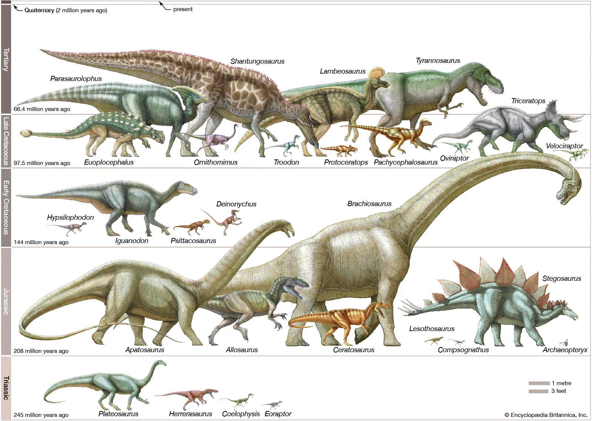

Dinosaurs were a diverse group of reptiles that lived millions of years ago during the Mesozoic Era, which is often referred to as the "Age of Dinosaurs." They first appeared about 230 million years ago and became extinct around 65 million years ago.
Types of Dinosaurs
There were many different types of dinosaurs, ranging from small, bird-like creatures to giant, long-necked sauropods and fearsome carnivores like Tyrannosaurus rex. There are two main groups of dinosaurs: Saruschia and Ornithischia.- Saurischia: These dinosaurs had lizard-like hips and include two main types:
- Theropods: They were mostly meat-eaters, like T. Rex and Velociraptor.
- Sauropodomorphs: These were the long-necked, plant-eating dinosaurs, like Brachiosaurus and Diplodocus.
- Ornithischia: These dinosaurs had hips that looked more like those of birds and include:
- Spiky Ones: They had body armor, like Stegosaurus and Ankylosaurus.
- Horned Ones: They had frills or horns on their heads, like Triceratops.
- Duck-Billed Ones: They were mostly plant-eaters and often had duck-like bills, like Iguanodon and Parasaurolophus.
Dinosaur Sizes

Dinosaurs came in various sizes. Some were as small as chickens, while others, like the long-necked sauropods, could grow to lengths exceeding 100 feet and weigh many tons. Some examples of dinosaur sizes would be:
- Smallest Dinosaurs:
- Microraptor: This small, feathered dinosaur from the Cretaceous period was about the size of a crow, with adults typically reaching lengths of around 2 feet (0.6 meters). Despite its small size, Microraptor was an agile predator capable of gliding through the air using its feathered wings.
- Medium-sized Dinosaurs:
- Velociraptor: Made famous by its portrayal in movies like Jurassic Park, Velociraptor was a small to medium-sized theropod dinosaur from the Late Cretaceous period. It measured about 2 meters (6.6 feet) in length and likely weighed around 15 kilograms (33 pounds). Despite its size, Velociraptor was a formidable predator, equipped with sharp claws and a highly agile body.
- Largest Dinosaurs:
- Tyrannosaurus rex: Perhaps the most famous of all dinosaurs, Tyrannosaurus rex was a large theropod dinosaur that lived during the Late Cretaceous period. It measured about 12 meters (40 feet) in length and weighed around 8 metric tons. T. rex had a massive skull filled with large, serrated teeth, and it was one of the top predators of its time.
Dinosaur Diet

- Herbivorous Dinosaurs:
- Herbivores primarily fed on plant material such as leaves, ferns, fruits, and other vegetation. They often had specialized adaptations for feeding on plants, such as beak-like mouths for cropping vegetation or specialized teeth for grinding tough plant material. Examples include the long-necked sauropods like Brachiosaurus and Diplodocus, which had small heads and long necks adapted for browsing high foliage. Other herbivorous dinosaurs include ceratopsians like Triceratops, which had large, beak-like mouths for cropping vegetation, and hadrosaurs like Parasaurolophus, which had specialized dental batteries for grinding tough plant material.
- Carnivorous Dinosaurs:
- Carnivores were predators that primarily fed on other animals. They often had sharp, serrated teeth for tearing flesh and claws for grasping and holding prey. Some well-known carnivorous dinosaurs include theropods like Tyrannosaurus rex, Velociraptor, and Allosaurus. These predators were at the top of the food chain in their respective ecosystems and likely preyed on a variety of animals, including smaller dinosaurs, mammals, and reptiles.
- Omnivorous Dinosaurs:
- Omnivores had diets that consisted of both plant and animal matter. They may have fed on a combination of vegetation, small animals, insects, and scavenged carrion. Examples of omnivorous dinosaurs include some theropods like Ornithomimus and Oviraptor. These dinosaurs had long, slender jaws with teeth suitable for both cutting meat and processing plant material. They likely had more flexible diets compared to strict herbivores or carnivores.
The Importance of Dinosaur Fossils
Our understanding of dinosaurs comes from the study of fossils, which are the preserved remains or traces of ancient organisms. Fossils provide clues about dinosaur anatomy, behavior, and ecology.- Understanding Evolution:
- Dinosaur fossils provide crucial evidence for understanding the evolution and diversity of life on Earth. They offer insights into the anatomy, behavior, and ecology of ancient organisms, as well as their relationships to modern species.
- Paleoenvironments:
- Fossils can also shed light on past environments and ecosystems, including climate, vegetation, and geographic distribution. By studying dinosaur fossils and the rocks in which they are found, scientists can reconstruct ancient landscapes and habitats.
- Education and Outreach:
- Dinosaur fossils capture the public imagination and inspire curiosity about the natural world. They are important tools for science education and outreach, allowing people of all ages to learn about Earth's history and the creatures that once roamed the planet.